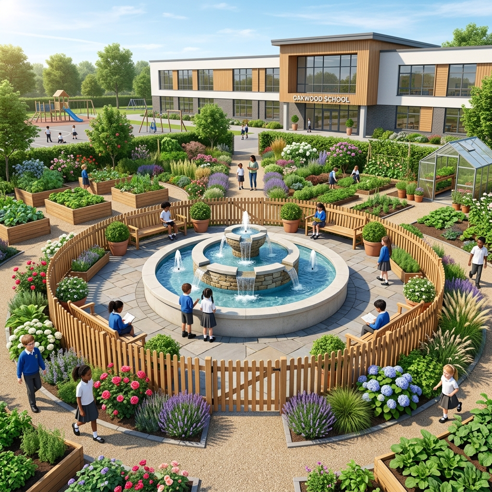
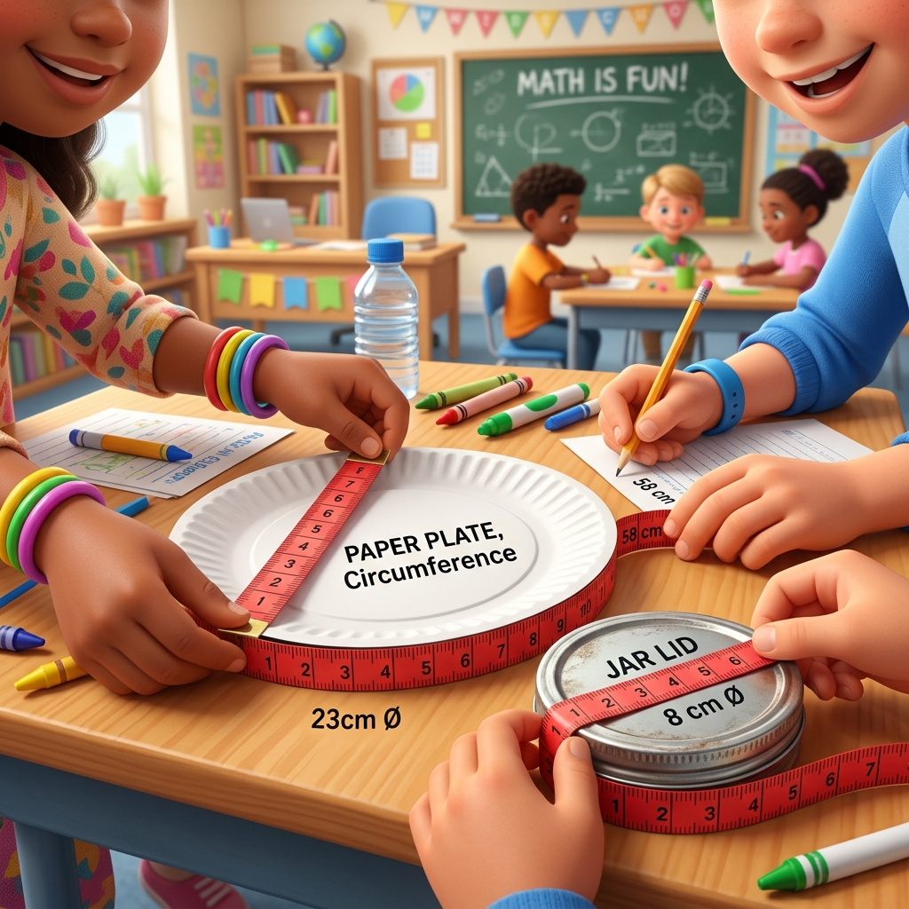

แผนการจัดกิจกรรมคณิตศาสตร์เชิงรุก เรื่อง “ความยาวรอบรูปวงกลม” ระดับชั้นประถมศึกษาปีที่ 6 ที่มุ่งสลายความซับซ้อน สร้างมิติสัมพันธ์ และแก้จุดตายข้อสอบ O-NET
นักเรียนมักแทนค่าสูตรสลับกันระหว่างการหาเส้นรอบวง \(2\pi r\) และพื้นที่ \(\pi r^2\) เมื่อเจอคีย์เวิร์ดคำว่า "ล้อมรั้ว"
ข้อสอบจำกัดเวลามาก แต่นักเรียนยังติดวิธีตั้งคูณตัวเลขทีละหลักแล้วตั้งหารยาวภายหลัง (เช่น คูณเศษทั้งหมดแล้วเอา 7 หาร) ทำให้คิดเลขไม่ทัน
จดจำสูตรแบบท่องจำโดยไม่รู้ที่มาของตัวแปร ส่งผลให้เมื่อเกิดความตื่นเต้นในห้องสอบจะลืมสูตรทันที

แบบจำลองสถานการณ์: ล้อมรั้วสระน้ำพุที่มีรัศมียาว 3.5 เมตร

ขั้น Concrete: นักเรียนจับกลุ่มใช้เชือกและสายวัดเพื่อหาเส้นรอบวงจริงจากสิ่งของทรงกลมในห้องเรียน
นักเรียนแบ่งกลุ่ม ช่วยกันใช้เชือกเส้นเล็กพันขอบจานกระดาษหรือฝากระป๋องเพื่อวัดความยาวเส้นรอบวง และวัดความยาวเส้นผ่านศูนย์กลาง จากนั้นนำมาหารกันเพื่อพบว่าผลลัพธ์มีค่าใกล้เคียง 3.14 หรือ 22/7 เสมอ
นักเรียนวาดรูปวงกลมลงในกระดาษเขียนแบบจำลองแนวรั้วล้อมรอบสระน้ำพุ ลากเส้นรัศมี และลงสีเน้นขอบรอบรูปสระ (r = 3.5 เมตร) เพื่อกระตุ้นระบบประสาทตาให้เข้าใจเส้นขอบอย่างชัดเจน
นักเรียนเขียนสัญลักษณ์แทนสูตรลงใบงานกลุ่ม: \(\text{ความยาวรั้ว} = 2\pi r\) แทนค่าตัวเลขในสมการ: \(2 \times \frac{22}{7} \times 3.5\) เพื่อหาคำตอบร่วมกัน
ข้อสังเกตของครู: เด็กๆ มักจะนำเศษคูณเศษก่อนคือ \(2 \times 22 = 44\) แล้วเอาไปคูณกับ \(3.5\) ได้ผลลัพธ์คือ \(154.0\) แล้วจึงนำมาหารด้วย \(7\) ทำให้เกิดโอกาสคิดเลขอัตราส่วนทศนิยมผิดพลาดสูงมาก
ให้สลับการคูณโดยการนำจำนวนคู่หน้าคูณหลังก่อน:
\(2 \times 3.5 = 7\)
จากนั้นเอา \(7\) ไปตัดทอนกับตัวส่วน \(7\) ด้านล่าง จะได้คำตอบเท่ากับ \(22\) เมตร ได้ทันทีภายใน 3 วินาที!
จานกระดาษ, ฝากระป๋อง และตลับสายวัดเชือกสำหรับวัดจริง
สำหรับเขียนแผนแปลน คำนวณสูตร และตรวจสอบกับดัก
แบบประเมินความก้าวหน้ารายบุคคลหลังจบบทเรียน
| ที่ | ชื่อ - นามสกุล นักเรียน | วัด & สเก็ตช์ | คิดลัด/ตัดทอน | โจทย์คู่ขนาน |
|---|---|---|---|---|
| 1 | เด็กชายสมศักดิ์ รักดี | 10 | 9 | 8 |
| 2 | เด็กหญิงสมศรี มีชัย | 10 | 10 | 9 |
| ... | (ความสูงแถวจดบันทึกจริง) | ... | ... | ... |
การใช้เครื่องมือรอบตัวช่วยให้นักเรียนสามารถจำแนกสเกล และสร้างทักษะความคุ้นชินเชิงเรขาคณิตโดยไม่ต้องผ่านขั้นตอนกติกาซับซ้อน
การวิเคราะห์จุดลวง O-NET และสอนทางลัดในการคำนวณตัดทอนเลข ช่วยเซฟเวลาสอบและจำกัดความผิดพลาดจากอารมณ์ตื่นเต้นได้สูง
เอกสารประกอบการสอนจัดวางเป็นระบบตามมาตรฐานเอกสารราชการไทย (TH Sarabun New) และตารางประเมินผลสูง 1.2 ซม. ที่ใช้งานได้ง่ายในห้องเรียนจริง
ตรงตามข้อกำหนดฟอนต์และขอบหน้ากระดาษ เหมาะสมต่อการเสนอผู้บริหารสถานศึกษาหรือใช้นำเสนอเพื่อนร่วมงานวิชาการได้ทันที